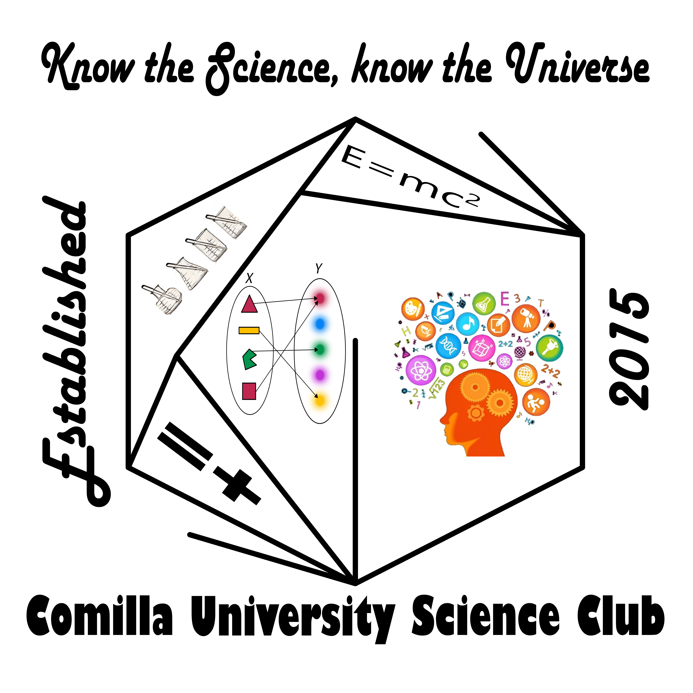

সাম্প্রতিক বৈজ্ঞানিক আবিষ্কার ও মহাকাশ বিষয়ে উন্মুক্ত, চাপমুক্ত আলোচনা — বিজ্ঞানকে আড্ডার বিষয় বানানো।Open, pressure-free discussions on recent scientific discoveries and cosmic phenomena — making science the subject of casual conversation.